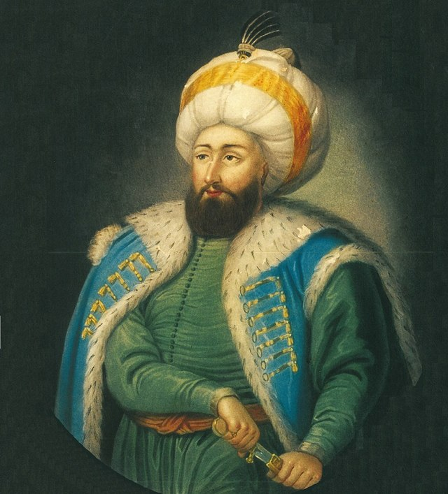
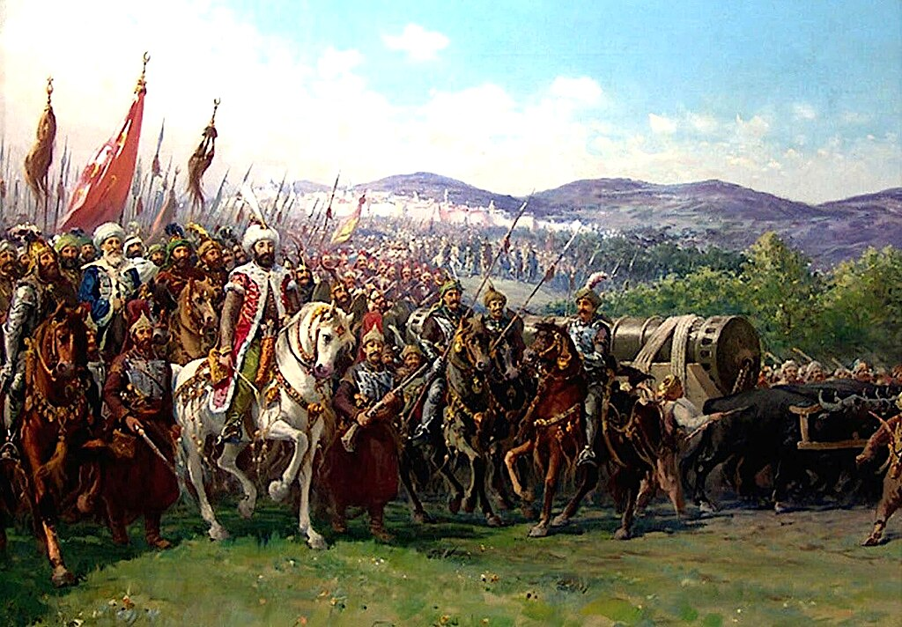

Mehmed the Conqueror: The Ottoman Empire's Victorious Leader
Mehmed the Conqueror, also known as Mehmed II, was a powerful and determined leader who lived a long time ago. He was born in 1432 and became the Sultan of the Ottoman Empire when he was just a teenager. One of his most famous achievements was conquering the city of Constantinople in 1453 when he was only 21 years old.
Mehmed was a skilled military leader and a clever strategist. He used big cannons to break through the city walls and successfully captured Constantinople, which was a major event in history. After this victory, he renamed the city Istanbul, which is what it's still called today.
Mehmed the Conqueror was known for being a strong and ambitious ruler who expanded the Ottoman Empire to new heights. His leadership and determination have left a lasting impact on history, making him an important figure to remember.

Short Biography: Mehmed the Conqueror:
Mehmed the Conqueror, whose full name was Sultan Mehmed II, was a remarkable leader from the 15th century who left a lasting impact on history. Born on March 30, 1432, in Adrianople (modern-day Edirne, Turkey), Mehmed became one of the most famous rulers of the Ottoman Empire.
From a young age, Mehmed showed great intelligence and leadership skills. He became Sultan of the Ottoman Empire when he was just 12 years old! Imagine being in charge of an entire empire at such a young age – it's quite impressive.
One of Mehmed's most notable achievements was the conquest of Constantinople in 1453 when he was only 21. Constantinople, now known as Istanbul, was a significant city that connected Europe and Asia. Mehmed's determination and clever strategies allowed him to capture the city, marking the end of the Byzantine Empire.
Mehmed was not only a skilled military leader but also a forward-thinking ruler. He worked hard to improve the lives of his people by developing trade, building schools, and promoting the arts and sciences. His reign was a time of great cultural and economic growth for the Ottoman Empire.
Despite being known as "the Conqueror," Mehmed had a softer side too. He was interested in learning and surrounded himself with scholars and artists. He even established a library, showcasing his love for knowledge.
Sultan Mehmed II's legacy lives on, and his accomplishments continue to be studied and admired. His reign left an indelible mark on history, and his achievements are remembered by people around the world.
Fun Facts
Mehmed II became Sultan at a young age, only 12 years old! This showed his determination and intelligence from a very early age.
He was an exceptional linguist, fluent in several languages, including Turkish, Arabic, Greek, and Latin. This helped him communicate with people from different regions and cultures.
Mehmed had a deep interest in learning and surrounded himself with scholars, artists, and architects, making his court a hub of creativity and knowledge.
He loved to explore new ideas and technologies, even inviting inventors and thinkers to his court to share their creations.

Timeline
1432 Mehmed II was born in Adrianople (modern-day Edirne, Turkey).
1444 He became Sultan for the first time, but due to political struggles, he had to temporarily step down from the throne.
1451 Mehmed became Sultan again, this time with more power and determination to expand the Ottoman Empire.
1453 One of his most famous achievements came when he conquered Constantinople, a city that had stood unconquered for centuries. This event marked the end of the Byzantine Empire and the beginning of the Ottoman Empire's prominence.
1473 He passed away, leaving behind a legacy of expansion, cultural growth, and architectural achievements.
Mehmed's Impact on the World:
He had a lasting impact on the world, not only through his military conquests but also through his patronage of the arts and his efforts to create a diverse and thriving society within the Ottoman Empire. His story teaches us about the importance of determination, learning, and embracing new ideas to achieve great things.
Reference Books for Elementary Students
While Mehmed the Conqueror may be a complex historical figure, there are some books that cater to elementary students by presenting his story in an engaging and age-appropriate manner. Please note that it's essential to review these books beforehand to ensure they align with your educational goals and are suitable for your students. Here are a few recommendations:
"Mehmed the Conqueror and His Time" by Franz Babinger
This book may be suitable for older elementary students or for teachers to extract relevant information for younger audiences.
"Mehmed II: The Conqueror of Constantinople" by Laura Foreman
Check for age-appropriate content, as this book provides an overview of Mehmed II's life and achievements.
"You Wouldn't Want to Be Mehmed II!" by Rupert Matthews
This is part of the "You Wouldn't Want to Be..." series, which presents historical figures in a humorous and engaging way. It's designed for elementary school readers.
"Mehmed the Conqueror" by John Freely
This biography is written for a general audience and may be suitable for extracting relevant information for elementary students.
"Mehmed II: The Conqueror" by Robert Green
Check for age-appropriate content in this biography, as it may offer insights into Mehmed II's life and historical context.
Remember to consider the reading level, content, and illustrations when selecting books for elementary students. Additionally, supplementing the reading with discussions and activities can enhance the learning experience. Always ensure that the material is suitable for your specific grade level and educational objectives.